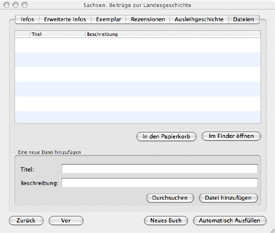

Der Reiter „Dateien”
Das Informationsfenster besteht aus sechs Reitern. Um das Informationsfenster
aufzurufen, klicken Sie doppelt auf den jeweiligen Bucheintrag oder klicken
Sie das Symbol „Infos einblenden”, welches sich in der Symbolleiste
befindet, an. Über
den Reiter „Dateien” können Sie bestimmte Dateien, zum Beispiel
Rechnungen, direkt mit dem jeweiligen Bucheintrag verbinden.

Eine Datei hinzufügen
Wenn Sie eine Datei zu der Liste hinzufügen möchten, geben Sie zunächst einen Titel und eine Beschreibung für die Datei an. Klicken Sie dann auf die Taste „Durchsuchen” und wählen die Datei in dem sich öffnenden Fenster aus. Anschließend klicken Sie die Taste „Datei hinzufügen” an.
Über die Taste „Im Finder öffnen” wird die ausgewählte Datei in dem Standardprogramm des Dateiformates geöffnet.
Eine Datei aus der Liste entfernen
Wenn Sie eine Datei aus der Liste entfernen möchten, klicken Sie die jeweilige Datei zunächst an und dann klicken Sie auf die Taste „In den Papierkorb”. Lediglich der Eintrag wird aus der Liste entfernt. Die Datei bleibt an Ihrem jeweiligen Speicherort erhalten.